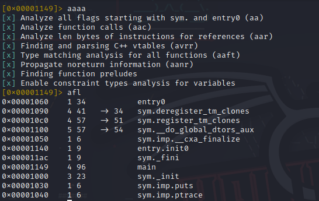
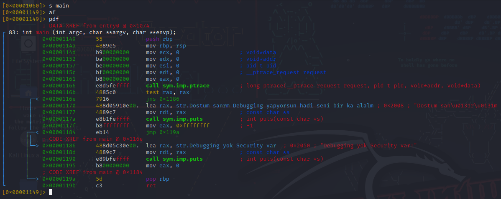
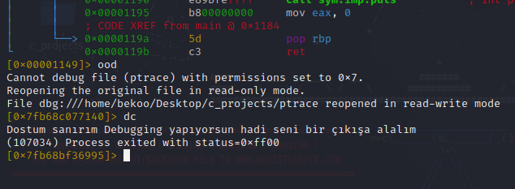
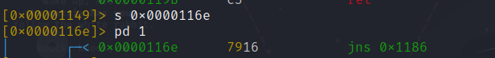
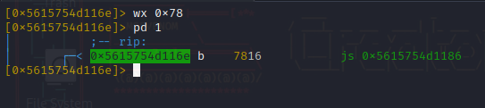
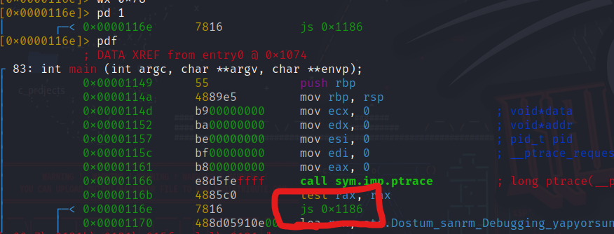
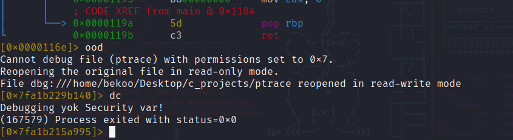
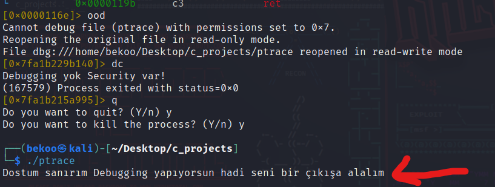

Merhabalar. Bu konumda ptrace’in nasıl bypass edilebileceğiniden bahsedeceğim.
ptrace, bir process’in diğer bir process’i debug etmesini sağlayan bir sistem çağrısıdır. Bu sistem çağrısı sayesinde bir process’in diğer process’inin memory’sine erişebiliriz. Bu sayede process’in memory’sindeki verileri okuyabilir, yazabilir ve değiştirebiliriz.
ptrace, genellikle bir işlemin yürütme zamanında izlenmesi ve kontrol edilmesi amacıyla kullanılır. Bu, hata ayıklama (debugging), sistem çağrılarını izleme, işlemi duraklatma, kaynak izleme ve benzeri geliştirme ve analiz amaçları için yaygın olarak kullanılan bir sistem aracıdır.
Ptrace’in Kullanımı C ile aşağıdaki basit kod ile ptrace’in kullanımı hakkında bilgi sahibi olabiliriz:
#include <stdio.h>
#include <sys/ptrace.h>
int main()
{
if(ptrace(PTRACE_TRACEME, 0, 0, 0) < 0) {
printf("Dostum sanırım Debugging yapıyorsun hadi seni bir çıkışa alalım\n");
return -1;
}
printf("Debugging yok Security var!\n");
return 0;
}
Programıma baktığımızda ilk aşamada bir PTRACE_TRACEME parametresi ile ptrace çağrısı yapıldığını görüyoruz. Bu parametre, process’in kendisini izlemek için kullanacağımızı belirtir. Bu fonksiyonun geri dönüş değeri 0’dan küçükse, işlemi izlemek için izin verilmediği anlamına gelir. Bu durumda programımız Dostum sanırım Debugging yapıyorsun hadi seni bir çıkışa alalım çıktısını verir. Eğer geri dönüş değeri 0 ise Debugging yok Security var! çıktısını verir.
Fonksiyon Parametreleri
long ptrace(enum __ptrace_request request, pid_t pid, void *addr, void *data);
enum __ptrace_request request
ilk parametre, ptrace’in hangi işlemi yapacağını belirten bir değerdir. Biz örnek senaryo için PTRACE_TRACEME kullandık. Bu parametre, Process’in kendisini izlemek için kullanacağımızı belirtir. Yani ikinci bir process değil o an çalıştırılacak process’i izlemeye alacaktır.
pid_t pid
İkinci parametre, işlem kimliğidir. Bu değer, işlemi izlemek isteyen işlem tarafından kullanılır.
void *addr
Üçüncü parametre, işlemin adresidir. Bu değer, işlemi izlemek isteyen işlem tarafından kullanılır.
void *data
Dördüncü parametre, işlemin verisidir. Bu değer, işlemi izlemek isteyen işlem tarafından kullanılır.
Ptrace’in Bypass Edilmesi
Şimdi ise önemli kısma geldik. Kali Linux’ta radare2 -w <program> komutuyla programımızı açıyoruz. Daha sonra aaa komutuyla programımızı analiz ediyoruz. afl komutuyla fonksiyonlarımızı görüntülüyoruz:

Fonksiyonlarda main ve ptrace görmemiz yeterli olacaktır. Şimdi ise s main komutuyla main fonksiyonuna gidelim ve pdf komutuyla main fonksiyonumuzu görüntülüyelim:

main içerisine baktığımızda ilk olarak prelog dediğimiz işlemin gerçekleştiğini görmekteyiz. Daha sonra ptrace fonksiyonun çağırıldığını görüyoruz ancak ondan önce bu fonksiyon için parametreler hazırlanıyor ve tüm parametrelere 0 değeri verilmiş. Fonksiyonun çağırılmasından sonra ise rax register’ın test instruction ile test edildiğini görmekteyiz.
Daha sonra jns (Jump if not Sign) ile eğer test edilen sonuç negatif bir sayı değil ise ( rax > 0 ) 0x00001186 adresine atlanıyor. Bu atlanılan kısımda Debugging yok Security Var! mesajı bastırılıyor. Yani bu kısım debugging edilmediğinde atlanılan bir kısım.
Eğer bu işlem başarısız olunursa yani sonuç negatif bir sayı ise 0x00001170 adresinden devam ediyor. Burası ise programın debugging edildiğinde atlanılan kısım. Bu kısımda ise Dostum sanırım Debugging yapıyorsun hadi seni bir çıkışa alalım mesajı bastırılıyor ve program bitiriliyor. Yani bu kısmın decompiler’ı şu şekilde olabilir:
long rax = ptrace(PTRACE_TRACEME, 0, 0, 0);
if (rax >= 0) {
printf("Debugging yok Security var!\n");
return 0;
}
printf("Dostum sanırım Debugging yapıyorsun hadi seni bir çıkışa alalım\n");
return -1;
Kodların source code’larını bilmediğimizi varsayarsak şuan biz bu programı Assembly kodları ile nasıl çalıştığını kabaca biliyoruz. bypass etmeden önce direkt programı çalıştıralım ve ne olduğuna bakalım:

Göründüğü gibi debugger ile programı çalıştırdığımızda “Dostum sanırım Debugging yapıyorsun hadi seni bir çıkışa alalım” mesajını alıyoruz. Şimdi ise bypass etmeye çalışalım.
Basit bir ptrace bypass etmek ile ilgili bloglarda genellikle rax register’ın değeri 0 yapılarak anlatılır. Bu da işe yarayan bir yöntemdir ancak ben burada farklı olarak sizlere farklı bir yöntem göstereceğim. Ayrıca bu yöntemin reverse engineering için sizlere daha iyi bir anlayış sağlayacağını ümit ediyorum.
Yapacağımız şey oldukça basit. Sadece karşılaştırmada kullanılan jns komutunu js olarak değiştirmek. Bunu neden yaptığımızı bu bypass sürecinde daha iyi anlayacağız. Let’s go!
Öncelikle programı çalıştırmadan s komutu ile 0x0000116e adresine gidelim. Burası jns ile değerin karşılaştırma yapıldığı kısım:

Ardından buradaki assembly kodunu js olarak değiştirelim. Bunun için wx 0x78 komutunu kullanacağız. 0x78 değeri js instruction’a karşılık gelmektedir:

Göründüğü gibi jns instruction’ı js instruction’ına çevrilmiş. Şimdi ise dc komutuyla programımızı çalıştıralım. Ancak ondan önce disassemble ettiğimiz main’in son haline bir göz atalım:

main’in son haline baktığımızda fonksiyonun geri dönüş adresini karşılaştırdığımız kısımda jns değil js görmekteyiz. Böylece yapılacak işlemler tam tersine dönmüş oldu:

Göründüğü gibi debugger içerisinde programı çalıştırdığımızda “Debugging yok Security var!” mesajını alıyoruz. Bu da bize ptrace’in bypass edildiğini gösteriyor. Yaptığımız işlemden sonra programın decompiler’ı şu şekilde olabilir:
long rax = ptrace(PTRACE_TRACEME, 0, 0, 0);
if (rax < 0) {
printf("Debugging yok Security var!\n");
return 0;
}
printf("Dostum sanırım Debugging yapıyorsun hadi seni bir çıkışa alalım\n");
return -1;
Programı debugger ile çalıştırdığımız için bu if koşulun içerisine girecektir çünkü rax, -1 değerini alacaktır. js Instruction’u negatif değerleri kontrol etmek için kullanılır.
Bu değişikliklerin ardından program için potansiyel bir sorun oluşmakta. Size şunu sormak istiyorum debug etmeden normal şartlarda bu programı çalıştırdığımızda sizce ne olur? Gelin bir de buna bakalım:

Normal şekilde programı başlattığımızda hata mesajımızla karşılaşıyoruz. Zaten bunun sebebini detaylandırdım. Programı debugger ile çalıştırmadığımız için 0 değerinde kalıyor. Programı reverse ettiğimizde koşulu js olarak değiştirmiştik. Dolayasıyla programı çalıştırdığımızda hata mesajını almamak için rax’ın negatif bir değer alması gerekiyor; bunun için de debugger ile çalıştırılması gerekir.
Umarım faydalı olmuştur. Bir sonraki konumuzda görüşmek üzere. Hoşça kalın.